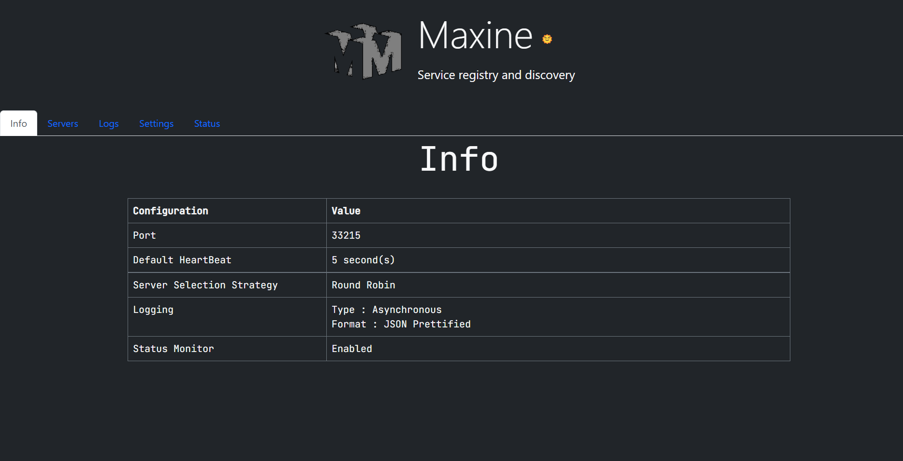

Maxine


Maxine is a Node.js service registry, discovery service, and operational control plane for service-to-service communication.

It provides:
- heartbeat-based service registration
- redirect or proxy-based discovery
- weighted node distribution with
RR,CH, andRH - local, shared-file, and Redis-backed registry state modes
- lease-based leader election in Redis mode
- optional active upstream health checks
- RBAC-protected control and operational endpoints
- audit, alerts, traces, and Prometheus-formatted metrics
- container, Helm, and SDK packaging
How It Fits Together
- Services register themselves with
POST /api/maxine/serviceops/register. - Maxine keeps active nodes in memory and mirrors them to local disk, shared storage, or Redis depending on runtime mode.
- Consumers resolve a service through discovery.
- Maxine either redirects the caller to the chosen upstream or proxies the request directly.
- In Redis mode, Maxine coordinates leader-protected control-plane work through a lease and fencing-token model.
Main Building Blocks
Registry
- stores active service nodes in memory for fast lookup
- restores state after restart when persistence is enabled
- supports shared coordination through
shared-fileorredismodes - models
weightby creating multiple virtual nodes
Discovery and Proxying
- redirect mode keeps Maxine out of the data path after resolution
- proxy mode keeps Maxine in the path for control, visibility, and consistent routing behavior
- selection strategies include round robin, consistent hashing, and rendezvous hashing
Control Plane
- runtime config mutation is available through authenticated APIs
- Redis mode supports lease-based leadership for leader-protected mutations
- active upstream health checks can evict repeatedly unhealthy nodes
Operations
- RBAC roles: viewer, operator, admin
- recent audit events, alerts, traces, cluster state, upstream probe state, and Prometheus metrics are exposed through actuator endpoints
- Helm and container workflows publish deployable artifacts through GitHub Actions
Current Status
Maxine is much more capable than the initial registry prototype, but it is not yet a fully consensus-backed distributed control plane.
The highest-priority remaining work is:
- move beyond Redis lease coordination toward stronger clustered semantics
- deepen proxy behavior, retries, and policy enforcement
- harden security, identity, and secret management
- add long-term observability integrations and frontend automation
See roadmap.md for the full backlog and the repository contribution guide for contributor-oriented detail.